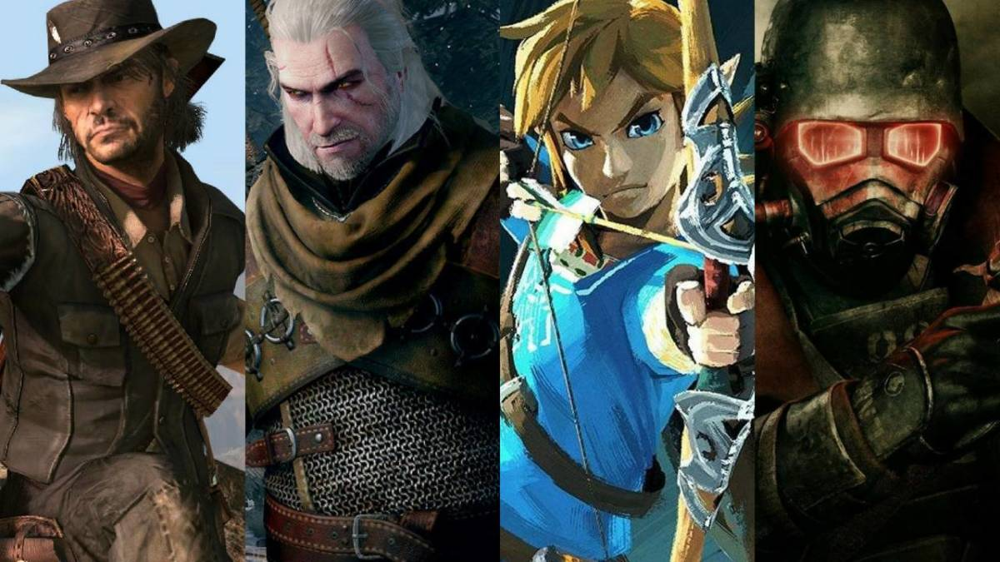

Top Open World Games in My Opinion
Welcome to my Top 3 Open World Video Games. Here you will find my personal favorite games that have a massive world that is not only great for exploring, but was well thought out and detailed. Open world games are my favorite video game genre. I hope you can enjoy and agree with me on my favorites!
